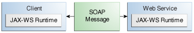

1. Building Web Services with JAX-WS
This chapter describes Java API for XML Web Services (JAX-WS), a technology for building web services and clients that communicate using XML. JAX-WS allows developers to write message-oriented as well as Remote Procedure Call–oriented (RPC-oriented) web services.
1.1. Overview of Java API for XML Web Services
In JAX-WS, a web service operation invocation is represented by an XML-based protocol, such as SOAP. The SOAP specification defines the envelope structure, encoding rules, and conventions for representing web service invocations and responses. These calls and responses are transmitted as SOAP messages (XML files) over HTTP.
Although SOAP messages are complex, the JAX-WS API hides this complexity from the application developer. On the server side, the developer specifies the web service operations by defining methods in an interface written in the Java programming language. The developer also codes one or more classes that implement those methods. Client programs are also easy to code. A client creates a proxy (a local object representing the service) and then simply invokes methods on the proxy. With JAX-WS, the developer does not generate or parse SOAP messages. It is the JAX-WS runtime system that converts the API calls and responses to and from SOAP messages.
With JAX-WS, clients and web services have a big advantage: the platform independence of the Java programming language. In addition, JAX-WS is not restrictive: A JAX-WS client can access a web service that is not running on the Java platform and vice versa. This flexibility is possible because JAX-WS uses technologies defined by the W3C: HTTP, SOAP, and WSDL. WSDL specifies an XML format for describing a service as a set of endpoints operating on messages.
Note: Several files in the JAX-WS examples depend on the port that you specified when you installed GlassFish Server. These tutorial examples assume that the server runs on the default port, 8080. They do not run with a nondefault port setting. |
1.2. Creating a Simple Web Service and Clients with JAX-WS
This section shows how to build and deploy a simple web service and two
clients: an application client and a web client. The source code for the
service is in the tut-install/examples/jaxws/helloservice-war/
directory, and the clients are in the
tut-install/examples/jaxws/hello-appclient/ and
tut-install/examples/jaxws/hello-webclient/ directories.
Figure 31-1 illustrates how JAX-WS technology manages communication between a web service and a client.

The starting point for developing a JAX-WS web service is a Java class
annotated with the javax.jws.WebService annotation. The @WebService
annotation defines the class as a web service endpoint.
A service endpoint interface or service endpoint implementation (SEI) is a Java interface or class, respectively, that declares the methods that a client can invoke on the service. An interface is not required when building a JAX-WS endpoint. The web service implementation class implicitly defines an SEI.
You may specify an explicit interface by adding the endpointInterface
element to the @WebService annotation in the implementation class. You
must then provide an interface that defines the public methods made
available in the endpoint implementation class.
1.2.1. Basic Steps for Creating a Web Service and Client
The basic steps for creating a web service and client are as follows.
-
Code the implementation class.
-
Compile the implementation class.
-
Package the files into a WAR file.
-
Deploy the WAR file. The web service artifacts, which are used to communicate with clients, are generated by GlassFish Server during deployment.
-
Code the client class.
-
Use the
wsimportMaven goal to generate and compile the web service artifacts needed to connect to the service. -
Compile the client class.
-
Run the client.
If you use NetBeans IDE to create a service and client, the IDE performs
the wsimport task for you.
The sections that follow cover these steps in greater detail.
1.2.2. Requirements of a JAX-WS Endpoint
JAX-WS endpoints must follow these requirements.
-
The implementing class must be annotated with either the
javax.jws.WebServiceor thejavax.jws.WebServiceProviderannotation. -
The implementing class may explicitly reference an SEI through the
endpointInterfaceelement of the@WebServiceannotation but is not required to do so. If noendpointInterfaceis specified in@WebService, an SEI is implicitly defined for the implementing class. -
The business methods of the implementing class must be public and must not be declared
staticorfinal. -
Business methods that are exposed to web service clients must be annotated with
javax.jws.WebMethod. -
Business methods that are exposed to web service clients must have JAXB-compatible parameters and return types. See the list of JAXB default data type bindings in Types Supported by JAX-WS.
-
The implementing class must not be declared
finaland must not beabstract. -
The implementing class must have a default public constructor.
-
The implementing class must not define the
finalizemethod. -
The implementing class may use the
javax.annotation.PostConstructor thejavax.annotation.PreDestroyannotations on its methods for lifecycle event callbacks.The
@PostConstructmethod is called by the container before the implementing class begins responding to web service clients.The
@PreDestroymethod is called by the container before the endpoint is removed from operation.
1.2.3. Coding the Service Endpoint Implementation Class
In this example, the implementation class, Hello, is annotated as a
web service endpoint using the @WebService annotation. Hello
declares a single method named sayHello, annotated with the
@WebMethod annotation, which exposes the annotated method to web
service clients. The sayHello method returns a greeting to the client,
using the name passed to it to compose the greeting. The implementation
class also must define a default, public, no-argument constructor.
package ee.jakarta.tutorial.helloservice;
import jakarta.jws.WebService;
import jakarta.jws.WebMethod;
@WebService
public class Hello {
private final String message = "Hello, ";
public Hello() {
}
@WebMethod
public String sayHello(String name) {
return message + name + ".";
}
}1.2.4. Building, Packaging, and Deploying the Service
You can use either NetBeans IDE or Maven to build, package, and deploy
the helloservice-war application.
To Build, Package, and Deploy the Service Using NetBeans IDE
-
Make sure that GlassFish Server has been started (see Starting and Stopping GlassFish Server).
-
From the File menu, choose Open Project.
-
In the Open Project dialog box, navigate to:
tut-install/examples/jaxws -
Select the
helloservice-warfolder. -
Click Open Project.
-
In the Projects tab, right-click the
helloservice-warproject and select Run.This command builds and packages the application into a WAR file,
helloservice-war.war, located intut-install/examples/jaxws/helloservice-war/target/, and deploys this WAR file to your GlassFish Server instance. It also opens the web service test interface at the URL shown in To Test the Service without a Client.
Next Steps
You can view the WSDL file of the deployed service by requesting the URL
http://localhost:8080/helloservice-war/HelloService?wsdl in a web
browser. Now you are ready to create a client that accesses this
service.
To Build, Package, and Deploy the Service Using Maven
-
Make sure that GlassFish Server has been started (see Starting and Stopping GlassFish Server).
-
In a terminal window, go to:
tut-install/examples/jaxws/helloservice-war/ -
Enter the following command:
mvn installThis command builds and packages the application into a WAR file,
helloservice-war.war, located in thetargetdirectory, and then deploys the WAR to GlassFish Server.
Next Steps
You can view the WSDL file of the deployed service by requesting the URL
http://localhost:8080/helloservice-war/HelloService?wsdl in a web
browser. Now you are ready to create a client that accesses this
service.
1.2.5. Testing the Methods of a Web Service Endpoint
GlassFish Server allows you to test the methods of a web service endpoint.
To Test the Service without a Client
To test the sayHello method of HelloService, follow these steps.
-
Open the web service test interface by entering the following URL in a web browser:
http://localhost:8080/helloservice-war/HelloService?Tester -
Under Methods, enter a name as the parameter to the
sayHellomethod. -
Click sayHello.
This takes you to the
sayHelloMethod invocation page.Under Method returned, you’ll see the response from the endpoint.
1.2.6. A Simple JAX-WS Application Client
The HelloAppClient class is a stand-alone application client that
accesses the sayHello method of HelloService. This call is made
through a port, a local object that acts as a proxy for the remote
service. The port is created at development time by the wsimport Maven
goal, which generates JAX-WS portable artifacts based on a WSDL file.
Coding the Application Client
When invoking the remote methods on the port, the client performs these steps.
-
It uses the generated
helloservice.endpoint.HelloServiceclass, which represents the service at the URI of the deployed service’s WSDL file:import ee.jakarta.tutorial.helloservice.endpoint.HelloService; import jakarta.xml.ws.WebServiceRef; public class HelloAppClient { @WebServiceRef(wsdlLocation = "http://localhost:8080/helloservice-war/HelloService?WSDL") private static HelloService service; -
It retrieves a proxy to the service, also known as a port, by invoking
getHelloPorton the service:ee.jakarta.tutorial.helloservice.endpoint.Hello port = service.getHelloPort();The port implements the SEI defined by the service.
-
It invokes the port’s
sayHellomethod, passing a string to the service:return port.sayHello(arg0);
Here is the full source of HelloAppClient.java, which is located in
the
tut-install/examples/jaxws/hello-appclient/src/main/java/ee/jakarta/tutorial/hello/appclient/
directory:
package ee.jakarta.tutorial.hello.appclient;
import ee.jakarta.tutorial.helloservice.endpoint.HelloService;
import jakarta.xml.ws.WebServiceRef;
public class HelloAppClient {
@WebServiceRef(wsdlLocation =
"http://localhost:8080/helloservice-war/HelloService?WSDL")
private static HelloService service;
/**
* @param args the command line arguments
*/
public static void main(String[] args) {
System.out.println(sayHello("world"));
}
private static String sayHello(java.lang.String arg0) {
ee.jakarta.tutorial.helloservice.endpoint.Hello port =
service.getHelloPort();
return port.sayHello(arg0);
}
}Running the Application Client
You can use either NetBeans IDE or Maven to build, package, deploy, and
run the hello-appclient application. To build the client, you must
first have deployed helloservice-war, as described in
Building, Packaging, and Deploying the Service.
To Run the Application Client Using NetBeans IDE
-
From the File menu, choose Open Project.
-
In the Open Project dialog box, navigate to:
tut-install/examples/jaxws -
Select the
hello-appclientfolder. -
Click Open Project.
-
In the Projects tab, right-click the
hello-appclientproject and select Build.This command runs the
wsimportgoal, then builds, packages, and runs the client. You will see the output of the application client in the hello-appclient output tab:--- exec-maven-plugin:1.2.1:exec (run-appclient) @ hello-appclient --- Hello, world.
To Run the Application Client Using Maven
-
In a terminal window, go to:
tut-install/examples/jaxws/hello-appclient/ -
Enter the following command:
mvn installThis command runs the
wsimportgoal, then builds, packages, and runs the client. The application client output looks like this:--- exec-maven-plugin:1.2.1:exec (run-appclient) @ hello-appclient --- Hello, world.
1.2.7. A Simple JAX-WS Web Client
HelloServlet is a servlet that, like the Java client, calls the
sayHello method of the web service. Like the application client, it
makes this call through a port.
Coding the Servlet
To invoke the method on the port, the client performs these steps.
-
It imports the
HelloServiceendpoint and theWebServiceRefannotation:import ee.jakarta.tutorial.helloservice.endpoint.HelloService; ... import jakarta.xml.ws.WebServiceRef; -
It defines a reference to the web service by specifying the WSDL location:
@WebServiceRef(wsdlLocation = "http://localhost:8080/helloservice-war/HelloService?WSDL") -
It declares the web service, then defines a private method that calls the
sayHellomethod on the port:private HelloService service; ... private String sayHello(java.lang.String arg0) { ee.jakarta.tutorial.helloservice.endpoint.Hello port = service.getHelloPort(); return port.sayHello(arg0); } -
In the servlet, it calls this private method:
out.println("<p>" + sayHello("world") + "</p>");
The significant parts of the HelloServlet code follow. The code is
located in the
tut-install/examples/jaxws/hello-webclient/src/java/ee/jakarta/tutorial/hello/ webclient/
directory.
package ee.jakarta.tutorial.hello.webclient;
import ee.jakarta.tutorial.helloservice.endpoint.HelloService;
import java.io.IOException;
import java.io.PrintWriter;
import jakarta.servlet.ServletException;
import jakarta.servlet.annotation.WebServlet;
import jakarta.servlet.http.HttpServlet;
import jakarta.servlet.http.HttpServletRequest;
import jakarta.servlet.http.HttpServletResponse;
import jakarta.xml.ws.WebServiceRef;
@WebServlet(name="HelloServlet", urlPatterns={"/HelloServlet"})
public class HelloServlet extends HttpServlet {
@WebServiceRef(wsdlLocation =
"http://localhost:8080/helloservice-war/HelloService?WSDL")
private HelloService service;
/**
* Processes requests for both HTTP <code>GET</code>
* and <code>POST</code> methods.
* @param request servlet request
* @param response servlet response
* @throws ServletException if a servlet-specific error occurs
* @throws IOException if an I/O error occurs
*/
protected void processRequest(HttpServletRequest request,
HttpServletResponse response)
throws ServletException, IOException {
response.setContentType("text/html;charset=UTF-8");
try (PrintWriter out = response.getWriter()) {
out.println("<html lang=\"en\">");
out.println("<head>");
out.println("<title>Servlet HelloServlet</title>");
out.println("</head>");
out.println("<body>");
out.println("<h1>Servlet HelloServlet at " +
request.getContextPath () + "</h1>");
out.println("<p>" + sayHello("world") + "</p>");
out.println("</body>");
out.println("</html>");
}
}
// doGet and doPost methods, which call processRequest, and
// getServletInfo method
private String sayHello(java.lang.String arg0) {
ee.jakarta.tutorial.helloservice.endpoint.Hello port =
service.getHelloPort();
return port.sayHello(arg0);
}
}Running the Web Client
You can use either NetBeans IDE or Maven to build, package, deploy, and
run the hello-webclient application. To build the client, you must
first have deployed helloservice-war, as described in
Building, Packaging, and Deploying the Service.
To Run the Web Client Using NetBeans IDE
-
From the File menu, choose Open Project.
-
In the Open Project dialog box, navigate to:
tut-install/examples/jaxws -
Select the
hello-webclientfolder. -
Click Open Project.
-
In the Projects tab, right-click the
hello-webclientproject and select Build.This task runs the
wsimportgoal, builds and packages the application into a WAR file,hello-webclient.war, located in thetargetdirectory, and deploys it to GlassFish Server. -
In a web browser, enter the following URL:
http://localhost:8080/hello-webclient/HelloServletThe output of the
sayHellomethod appears in the window.
To Run the Web Client Using Maven
-
In a terminal window, go to:
tut-install/examples/jaxws/hello-webclient/ -
Enter the following command:
mvn installThis command runs the
wsimportgoal, then build and packages the application into a WAR file,hello-webclient.war, located in thetargetdirectory. The WAR file is then deployed to GlassFish Server. -
In a web browser, enter the following URL:
http://localhost:8080/hello-webclient/HelloServletThe output of the
sayHellomethod appears in the window.
1.3. Types Supported by JAX-WS
JAX-WS delegates the mapping of Java programming language types to and from XML definitions to JAXB. Application developers don’t need to know the details of these mappings but should be aware that not every class in the Java language can be used as a method parameter or return type in JAX-WS.
The following sections explain the default schema-to-Java and Java-to-schema data type bindings:
1.3.1. Schema-to-Java Mapping
The Java language provides a richer set of data types than XML schema. Table 31-1 lists the mapping of XML data types to Java data types in JAXB.
Table 31-1 Mapping of XML Data Types to Java Data Types in JAXB
XML Schema Type |
Java Data Type |
|
|
|
|
|
|
|
|
|
|
|
|
|
|
|
|
|
|
|
|
|
|
|
|
|
|
|
|
|
|
|
|
|
|
|
|
|
|
|
|
|
|
|
|
|
|
|
|
1.3.2. Java-to-Schema Mapping
Table 31-2 shows the default mapping of Java classes to XML data types.
Table 31-2 Mapping of Java Classes to XML Data Types in JAXB
Java Class |
XML Data Type |
|
|
|
|
|
|
|
|
|
|
|
|
|
|
|
|
|
|
|
|
|
|
|
|
|
|
|
|
1.4. Web Services Interoperability and JAX-WS
JAX-WS supports the Web Services Interoperability (WS-I) Basic Profile Version 1.1. The WS-I Basic Profile is a document that clarifies the SOAP 1.1 and WSDL 1.1 specifications to promote SOAP interoperability. For links related to WS-I, see Further Information about JAX-WS.
To support WS-I Basic Profile Version 1.1, the JAX-WS runtime supports doc/literal and rpc/literal encodings for services, static ports, dynamic proxies, and the Dynamic Invocation Interface (DII).
1.5. Further Information about JAX-WS
For more information about JAX-WS and related technologies, see
-
Java API for XML Web Services 2.2 specification:
-
JAX-WS home:
-
Simple Object Access Protocol (SOAP) 1.2 W3C Note:
-
Web Services Description Language (WSDL) 1.1 W3C Note:
-
WS-I Basic Profile 1.2 and 2.0: